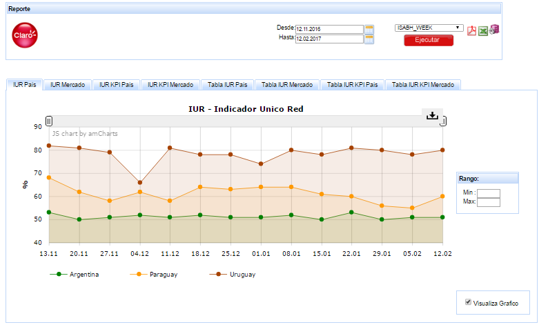

Tablero IUR¶
1. OBJETIVO¶
El presente documento buscar explicar y detallar el proceso que genera el Tablero IUR.
2. ALCANCE¶
Áreas involucradas: Performance de Red, procesos.
3. DEFINICIONES¶
- Perdido: Servidor UNIX en donde se importan los XML desde el proveedor, y en donde se encuentra Smart. El nombre es perdido.claro.amx y la dirección ip física es 10.92.50.83
4. DESCRIPCION GENERAL¶
Tablero IUR
El IUR (Indicador Unico de Red) indica el porcentaje de celdas 3G de la red cuyos indicadores están OK. Ejemplo: en la red AUP hay 55.000 celdas, de las cuales 30.000 tienen sus indicadores OK, entonces el IUR es del 60%. IUR = 30.000 / 50.000 * 100
Para considerar que los indicadores de una celda están OK, todos y c/u de los indicadores de esa celda deben cumplir, o sea deben estar por encima del umbral definido. Si la celda cumple con todas las condiciones, se dice que está funcionando correctamente a nivel de acceso, y se asigna el valor de 1. Si no cumple con alguna de las condiciones se le asigna el valor de cero. El indicador se forma de siguiente manera:
IUR = 100 * Suma de las celdas que cumplen las condiciones / Cantidad de celdas totales
Los indicadores definidos son:
- No Retenibilidad de Voz : Representa el porcentaje de llamadas caídas. Menor o Igual que 1%
- Accesibilidad de Voz : Representa el porcentaje de establecimiento de llamadas de voz. Mayor o Igual que 98%
- RTWP: Representa el nivel total de ruido dentro de la banda de frecuencia. Menor o Igual que -90 dBm
- No Accesibilidad Datos HSDPA : Representa el porcentaje de fallas en el canal de datos HSDPA sobre el total de intentos. Menor o Igual a 5%
- Throughput HSDPA : Representa la velocidad de conexión para los usuarios en HSDPA. Mayor o Igual que 400 kbps
- Usuarios Simultáneos HSDPA : Indica la cantidad de usuarios conectados en forma simultánea. Menor o Igual a 40
- Disponibilidad Cliente : Indica el porcentaje de tiempo que la celda está al aire. Mayor o Igual que 99,6%
- Capacity Management : Representa el porcentaje de la carga de voz, datos y usuarios de la celda. Menor o Igual que 80%
Para todos los indicadores se consideran los valores ISABHW (pico semanal), excepto para la Disponibilidad Cliente que es diaria. ISABHW = Individual Sector Average-Busy-Hour Week, o sea promedio de los valores de hora pico de la semana, de cada sector individual.

- Server: perdido.claro.amx (10.92.50.83).
- Base de Datos: Oracle 10G. Instancia WILLY
- Proceso que genera el tablero: el proceso tiene nombre “tablero_iur.sh” y actualiza la tabla semanalmente tablero_umts_iur_isabhw se lo puede encontrar en el crontab del equipo perdido, a continuación se lo transcribe:
00 11 * * 1 /calidad/tablero/iur/tablero_iur.sh > /dev/null 2>&1 La ejecución entonces se realiza el minuto 11, de la hora 00, todos los días Lunes del año, todos los meses del año, todos los días de la semana (00 11 * * *)
- Frecuencia del proceso: Semana
- Duración del proceso: 2 minutos aprox
- Ubicación del proceso: /calidad/tablero/iur/tablero_iur.sh
- Logueo del proceso: el logueo del proceso se realiza en el archivo tablero_iur.log (ubicado en el path calidad/tablero/iur)
4.2. Listado de Tablas Utilizadas¶
Tablas utilizadas:
- UMTS_NSN_SERVICE_WCEL_ISABHWC
- UMTS_NSN_SERVICE_WCEL_ISABHWP
Tabla completa en: UMTS_NSN_SERVICE_WCEL_ISABHWP
- UMTSC_NSN_HSDPA_WCEL_ISABHW
Tabla completa en: UMTSC_NSN_HSDPA_WCEL_ISABHW
- OBJECTS_SP_UMTS
- NOC_UMTS_AVAIL_WCEL_DAYWO
- UMTSC_NSN_MACD_WCEL_ISABHW
- UMTS_NSN_HSDPA_WCEL_ISABHW

- UMTS_CLDD_RADAR_WCEL_DAYW
5. MACRO FLUJO DEL PROCESO¶

6. DESCRIPCION DETALLADA¶
- Shell Script: tablero_iur
- El logueo del proceso se realiza en el archivo tablero_iur.log (ubicado en el path calidad/tablero/iur/): tablero_iur_log
- El proceso SQL tablero_iur_umts_isabhw: tablero_iur_umts_isabhw
- Proceso sql para realizar reproceso: tablero_iur_umts_isabhw_rec
7. REPROCESO¶
El reproceso se realiza de la siguiente manera:
- Formato de la fecha: DD.MM.YYYY
Ejemplo de reproceso:

8. SMART¶
Los reportes en la herramienta Smart se muestran de la siguiente manera:
9. CONTROL DE CAMBIOS¶
| Fecha | Responsable | Ticket Jira | Detalle | Repositorio |
|---|---|---|---|---|
| 19.07.2017 | Monica Pellegrini | Se cambia la tabla de amx_load y se apunta a tabla que esta en base de dato cortado. |